CAD
2D Design
What are the differences between vector and raster CAD?Vector software use mathematical formulae to define how your image looks. This means that images have an infinite resolution within the editor, meaning that if the image is zoomed in, the resolution of the image will not decrease, no matter how much it is zoomed in.
Raster software however, uses individual pixels to define your image, meaning that the image cannot be zoomed in without seeing a decrease in resolution.
GIMP (raster)
scale, crop, resize
Cropping:
using tools>transform tools>crop, this image:

can be cropped to show only the camera:

This is the result using 100% export quality:

and this is the result using 10% quality

As we can see, the resolution of this image is lower than that of the previous one.
However, we can observe that although the image is of worse quality, the file size is also significantly smaller at 20.8 KB as compared to 319 KB of the full size image.
Resizing and rescaling:
Once again using the drop down menu under image>scale image, this image with a resolution of 1918 x 1919,

can be scaled to, lets say 3000 x 3000 pixels


and this is the exported png file from GIMP:

The same method can also be used to make the image smaller

and this is the result:

Inkscape (vector)
3D Design
Fusion 360 Exercises and demos:
Firstly, i drew a simple rectangle with an arc (with construction lines)
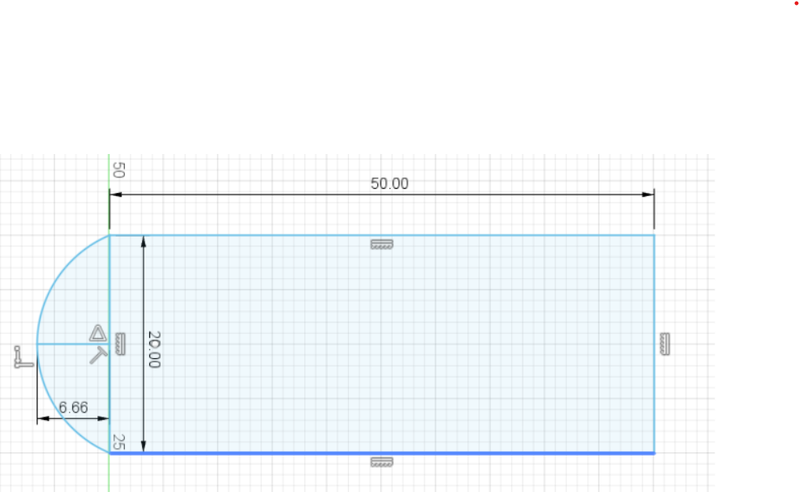
Using the offset tool, i made an outline 2mm inside the existing drawing (after removing the construction lines)
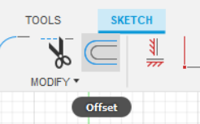
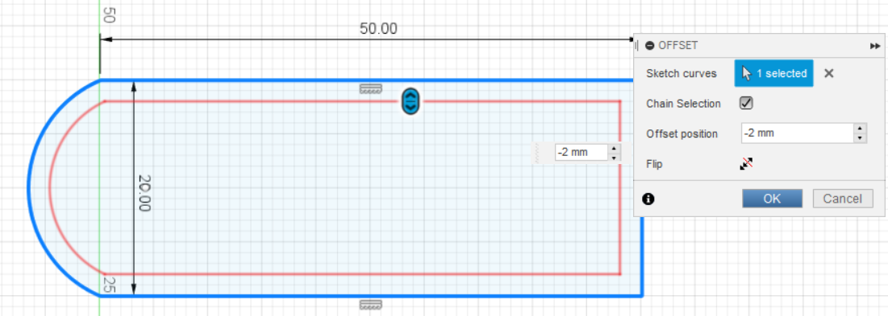
Using the 2 point circle tool, i drew a circle with a diameter of 3.5mm as shown in the tutorial
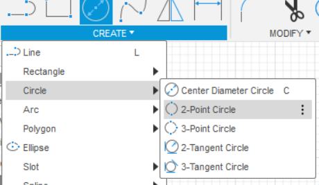
After this, i used the circle (center diameter tool) to make the outer perimeter of the hanger and to make the inside slightly nicer
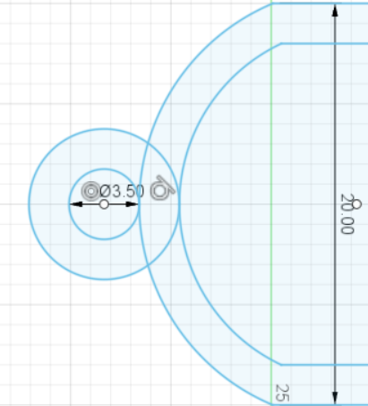 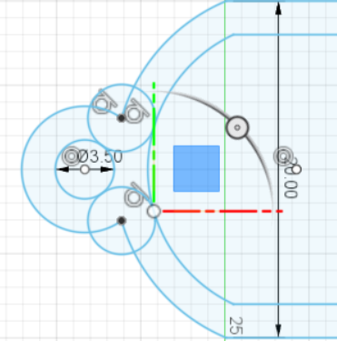
A short trim later,
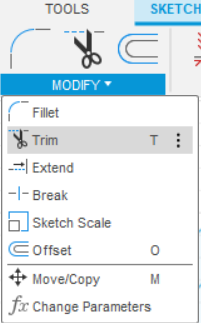
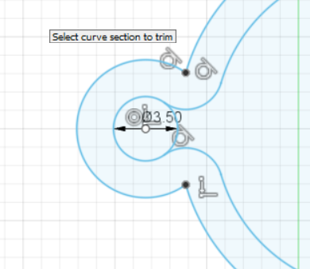
Before i use the extrude tool to make the keychain 3d, i added my name in ariel font using the text tool.
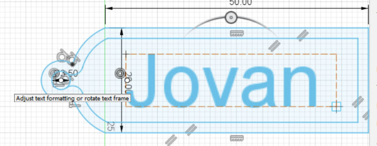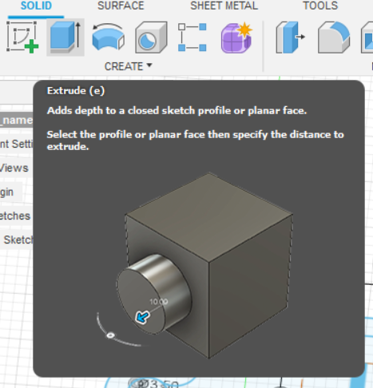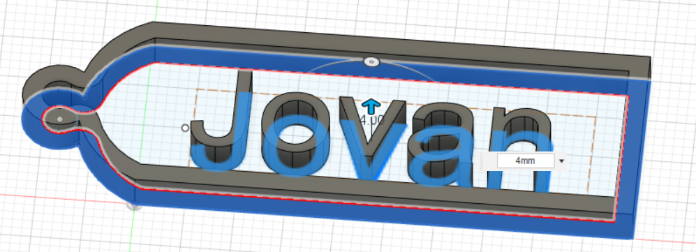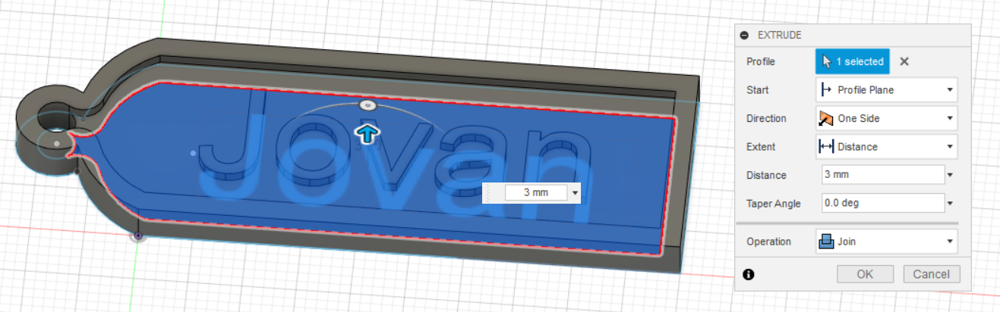
And this is the finished result ready for printing!
Experimenting with the split function to cut a "shelled" cube into 2 using an arc.
Below is a loft experiment.
Simple ball inside cube design (i will print this in both 100% and 200% scale)
As you can see, i also played around with the appearance of the components
This was one of the assignments given during the lessons:
I managed to make all the components however, i was never able to figure out how to make them move.